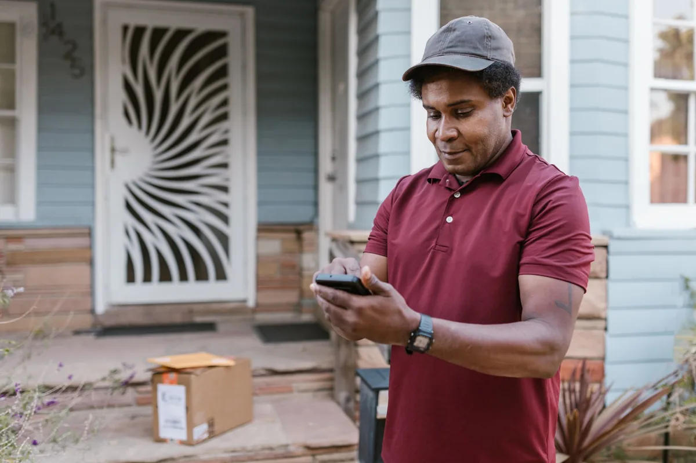
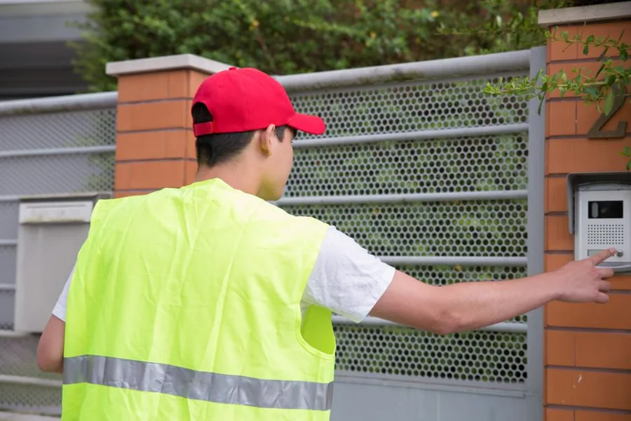
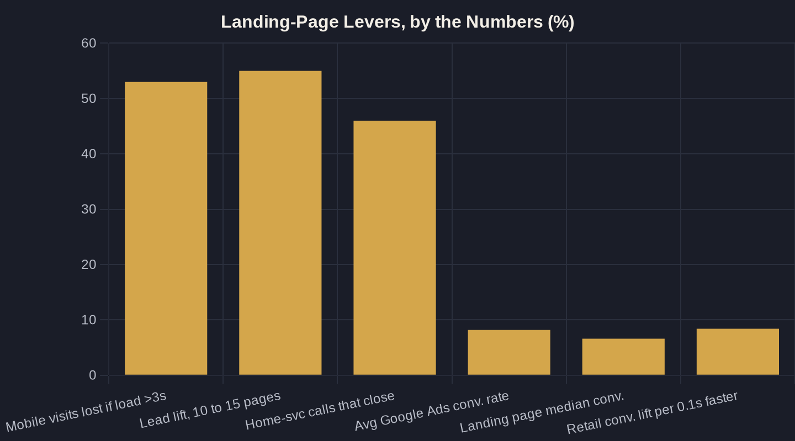

The Google Ads Landing Page That Doubles Your Leads
You can win the auction, get the click, and still lose the lead. The page that loads after the click does as much work as your keyword and your bid combined — here's how to build one that actually converts.

Key takeaways
- The destination page does as much work as your keyword and bid — beating the 8.18% average Google Ads conversion rate is usually a page problem, not a bidding problem.
- Stop pointing ads at your homepage. A dedicated landing page that matches the search converts more per click, and going from 10 to 15 pages lifted leads 55% in HubSpot's data.
- Speed is a hidden lead leak: 53% of mobile visitors leave if a page takes over three seconds, and even a 0.1-second gain moved conversions 8.4%.
- For local service work, click-to-call is a primary path — 46% of qualified home-services phone leads close on the call. Put a tap-to-call button up top, not in the footer.
- Run the Owner's Math: doubling a page's conversion rate doubles leads on the same spend, which makes the landing page the cheapest growth lever you have.
Your Google Ads Landing Page Decides Whether the Click Pays Off
You can win the auction, get the click, and still lose the lead. The page that loads after the click — your Google Ads landing page — does as much work as the keyword and the bid combined, yet it's the part most local owners never touch.
Across 13,474 US search campaigns analyzed from April 2025 through March 2026, the average Google Ads conversion rate was 8.18% — and that figure blends great pages with terrible ones. The owners beating it usually aren't bidding more; they're sending clicks somewhere built to convert. This is one chapter of the larger Google Ads for Local Service Businesses playbook; here we go deep on the page itself.
The Homepage Is Where Paid Clicks Go to Die
Most local businesses point every ad at the homepage. It feels efficient — one page to maintain, one URL to remember. It's also the most expensive habit in a paid account.
A homepage is built for everyone: brand story, full service menu, careers, the owner's bio. A landing page is built for one person who just searched "emergency plumber near me" and wants one thing, fast. HubSpot's study of 7,000 businesses found companies that grew from 10 to 15 landing pages saw a 55% increase in leads — not because pages are magic, but because each one answers a specific search.
If you're still weighing channels, start with Local Services Ads vs Google Ads. But once you're paying per click, the destination page is where the money is made or wasted.

What a High-Converting Google Ads Landing Page Actually Has
The median landing page converts at 6.6% across industries, per Unbounce's analysis of 41,000 pages and more than 57 million conversions. Treat that as the floor a dedicated Google Ads landing page should clear — not the finish line.
The pages that beat it share a short, boring checklist:
- One headline that echoes the search. If the ad said "Same-Day AC Repair in Tulsa," the page says it back, word for word.
- One offer, one action. Call or book — not call, book, subscribe, and read the blog.
- Proof above the fold. Reviews, license number, years in business, a service-area map.
- A short form. Name, phone, and the job. Every extra field is a reason to leave.
- No site navigation. Remove the menu so the only two paths are convert or close.
None of this is design genius. It's discipline — refusing to let the page do five jobs when the click came for one.
Speed Is a Lead-Loss Lever You Can't See
Google's data shows 53% of mobile visits are abandoned when a page takes longer than three seconds to load. For paid traffic, that isn't a UX footnote — it's up to half your ad budget evaporating before anyone reads the headline.
Small gains compound, too. A Google- and Deloitte-commissioned study of more than 30 million sessions found a 0.1-second speed improvement lifted retail conversions by 8.4% and average order value by 9.2%. You rarely need a rebuild — you need the page light enough to load fast on a phone over cellular: compressed images, no heavy sliders, minimal scripts.
| Lever | Generic homepage | Dedicated landing page |
|---|---|---|
| Message match to the ad | Generic — speaks to everyone | Exact — echoes the search term |
| Calls to action | Many (menu, blog, careers, contact) | One (call or book) |
| Site navigation | Full menu invites wandering | Removed — convert or close |
| Proof placement | Buried on an About page | Above the fold (reviews, license, area) |
| Form length | Long contact form | Name, phone, job |
| Typical result | Clicks in, few leads out | Higher conversion rate per click |

The Click-to-Call CTA You're Probably Burying
For local service work, the phone is still the highest-intent path — and most pages bury it. Invoca's call data shows 46% of qualified inbound phone calls to home-services businesses convert on the call itself. A buried number costs you booked jobs, not just clicks.
Make the call obvious: a tap-to-call button in the thumb zone, the number repeated in the header and beside every offer, and a one-line reason to call now ("We answer live, 7am–9pm"). On a Google Ads landing page for a service business, click-to-call is a primary conversion path — design it like one, not like a footer afterthought.
Owner's Math: What Doubling Your Conversion Rate Is Worth
Here's why the page earns its own article. Say you spend $3,000 a month, get 300 clicks, and your current page converts at 5% — that's 15 leads. Lift the page to 10% on the same spend and the same clicks, and you now produce 30 leads. You didn't add a dollar of budget; you doubled output by fixing the destination.
That's the whole point of Owner's Math — tracing what one dollar of ad spend actually returns, from impression to booked job. The landing page is the cheapest lever on that chain, because improving it costs hours, not media dollars. Before you raise budget, read how much you should actually spend — then make sure the page can hold the extra traffic.
Where to Start This Week
You don't need a redesign to see a lift. Build one dedicated page for your highest-spend service, match its headline to the ad, strip the navigation, put a tap-to-call button up top, and get it loading in under three seconds on a phone. That single page will usually outperform the homepage it replaced.
From there, the inputs feeding the page matter as much as the page itself: send it the right searches by choosing and blocking the right local keywords so you're converting buyers, not browsers.
If you'd rather have a second set of eyes run the numbers on your account — what your page converts at today, and what doubling it is worth in booked jobs — that's exactly what an Owner's Math review maps. Reply to the newsletter or book a call and bring your current page; we'll trace the dollar from click to booked job and find where it's leaking.
Sources
- WordStream (LOCALiQ) — Google Ads Benchmarks 2026 (2026)
- Unbounce — Conversion Benchmark Report (2024)
- HubSpot — Why You (Yes, You) Need to Create More Landing Pages (2012)
- Google (DoubleClick) — The Need for Mobile Speed (2016)
- Google & Deloitte — Milliseconds Make Millions (2020)
- Invoca — Home Services Call Conversion Benchmarks Report (2025)
Want this run on your numbers?
Book a call and we will run the Owner's Math on your business — clear numbers, a straight plan, no pitch. Or read the free Playbook first.